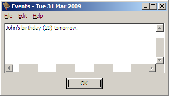
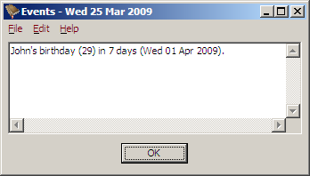
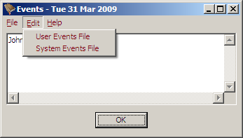
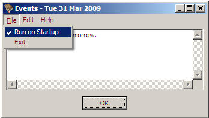

The super simple birthday and anniversary reminder program.

BDay is a simple program to help you track birthdays and anniversaries. It runs when you start or log in to your computer, displays any events that are coming up, and then exits when you click OK. It does not hang around in the system tray or as a background process taking up your computer's resources. If there are no events to be displayed, then you wont even see BDay run.
Lead Time
A Note About February 29th
A Day of the Week
Running BDay Automatically Under Linux
Events are stored in a simple text file. Each line in the text file lists one event which may be displayed. Here is an example showing a couple of events:
1 Apr 1980 John's birthday 25 Apr ANZAC Day
So a simple event is defined by the day, then the month (3 letters), the year and the event. The year is optional, and if defined then the number of years is displayed with the event. (e.g., John will be 29 on his birthday in 2009, so the number “29” is displayed in parenthesis after the event.)
By default, events are displayed from five days before they occur. You can
change this for a specific event by specifying the number of days warning after
the year. For example, if you had
“1 Apr 1980 10 John's birthday”
then on the 25th of March you would see:

If you want to use a default lead time other than five days, you can change it by putting the following in the event file:
lead time n
Where “n” is the number of days lead time
you want by default. All events specified after this line will have the new
lead time by default.
If you put an event such as
“29 Feb Fred & Wilma's Anniversary”
it will only show up every leap year. Instead, put in
“-1 Feb Fred & Wilma's Anniversary”
to display on the last day of February, every year.
See Advanced Event Formats for more details on advanced event formats.
If you want an event on, say the first Sunday of a month, then you can specify an event like this:
Sun Sep Fathers' Day
You specify the day of the week, the month, the year if you want it, and the event.
If you wanted an event on the second Sunday of the month instead, you would specify it like so:
Sun+2 May Mothers' Day
Again, you specify the day of the week, but this time you include a plus two
to indicate you wanted the second Sunday, not the first. It is important that
there be no spaces around the plus sign. (Note that
“Sun” and “Sun+1” are
equivalent.)
If instead, you wanted an event on the last Friday of the month, you could specify it like so:
Fri-1 Jan-Dec Balance accounts.
So a negative number indicates the last of the specified day in the month.
Likewise the second last Friday would be “Fri-2”.
Note that we also specified a range of months for this event, so the event will occur on the last Friday within the specified range (every month in this case). See Advanced Event Formats for more details on advanced event formats.
There are two event files available for editing:
- User Events File
- Event file for each user, only seen by each user.
System Events File- A single event file shared by all users.
You can edit these files from the Edit menu.

See Events File Locations for the locations in the file system where these files are stored.
NOTE: This is for Microsoft Windows only. For Linux, see Running BDay Automatically Under Linux.
Under the File menu you will see a menu item labelled, “Run on Startup”. Selecting this item will toggle whether BDay will run when the computer starts or the current user logs in.
